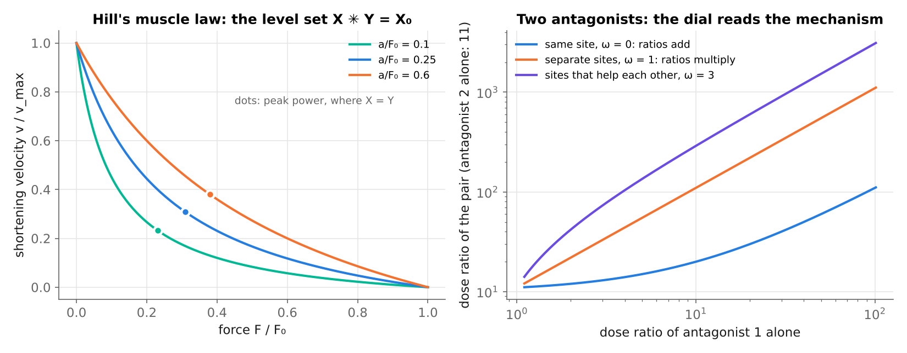

Biology series · 6 of 11
In reduced variables, Hill's force–velocity law for muscle is exactly X ∘₁ Y = constant, and its two asymptotes are the circle operation's absorbing −1. Two drug antagonists shift the agonist's dose ratio by DR₁₂ − 1 = (DR₁ − 1) ∘ω (DR₂ − 1): ratios add when the antagonists share a site and multiply when they sit at independent sites. Organs in series and pathways in parallel are the same dial 1 and dial 0.

Known or new. All known physiology and pharmacology. Hill's force–velocity equation is from 1938; the test of whether two antagonists act at the same site by adding or multiplying dose ratios is Paton and Rang's (1965); the well-stirred liver model and multiplying gut and liver availabilities are standard pharmacokinetics. What the page adds is the placement: Hill's hyperbola is a circle operation level set, and the antagonist and organ rules are dial settings that also appear on the metabolism and cell pages.
Is there a lead worth following? None. Every placement is exact, and the muscle one is pretty (the asymptotes are the circle operation's −1 and peak power is the circle operation 'square root'), but each is a rewriting of a known formula and suggests no new measurement.
A. V. Hill found that a muscle shortening against load F moves at speed v with (F + a)(v + b) = (F₀ + a)·b, where F₀ is the isometric force. Write X = F/a and Y = v/b. Then (1 + X)(1 + Y) = 1 + X₀, which is
So the whole curve is one level set of the circle operation, and velocity is the circle-operation difference Y = X₀ ∘₁ inv(X). Three consequences, all checked and proved:
A competitive antagonist shifts the agonist's dose–response curve right by a dose ratio DR = 1 + b, where b is the antagonist's concentration over its dissociation constant. With two antagonists, the receptor's partition function has an antagonist part 1 + b₁ + b₂ + ω·b₁b₂, and the dose ratio is that part:
I checked each case by solving the receptor occupancy numerically. This is the binding polynomial from the molecular biology page, read through the agonist.
For an organ with blood flow Q and intrinsic clearance CLint, put u = CLint/Q. The well-stirred extraction is E = u/(1 + u) = −inv(u), saturation again. Two enzymes in one organ add their clearances, dial 0 on u. Two organs in series, gut then liver, multiply their escapes, so 1/F = (1 + u₁)(1 + u₂) and u combines by plain ∘₁; the total first-pass loss is the "or" of the two extractions. The corner cell u₁u₂ is exactly how much more a split clearance removes than the same clearance pooled in one organ.
The Q₁₀ rule for temperature and Poiseuille's r⁻⁴ for vessel resistance are bare circle-operation powers (a vessel 10% narrower has 1.52 times the resistance) with no further content.
| Place | What the circle operation does there | Known since | Verdict |
|---|---|---|---|
| Hill force–velocity | Level set X ∘₁ Y = X₀; asymptotes at −1; peak power at X = Y | Hill 1938 | Exact relabelling |
| Two antagonists | DR₁₂ − 1 = (DR₁ − 1) ∘ω (DR₂ − 1); ω = 0 same site, 1 separate | Paton and Rang 1965 | Exact, known |
| Organ extraction | Parallel: dial 0 on u; series: plain ∘₁; losses by 'or' | Standard pharmacokinetics | Exact, known |
| Q₁₀, Poiseuille | Bare circle-operation powers | Textbook | Relabelling only |
File biology/06-physiology/lean/Physiology.lean, core Lean 4.37 with no mathlib, built on the shared library's base and using ∘₁ for the circle operation. Every theorem uses only Lean's standard axioms. It goes into the shared proof library as FusedAlgebra/Topics/Biology/Physiology.lean.
dose_ratio, extraction, first_pass, hill_asymptote, hill_level_set, hill_velocity, same_site, separate_sites, series_gain, series_organs, star_def
Numeric checks: 16 of 16 pass, from checks.py beside this page.
a/F₀ ≈ 0.25 is the usual textbook value for vertebrate skeletal muscle; I did not open Hill's paper for it. Nothing on this page uses measured data beyond that constant. The attribution of the dose-ratio additivity test to Paton and Rang (1965) is from memory; I did not open the paper.